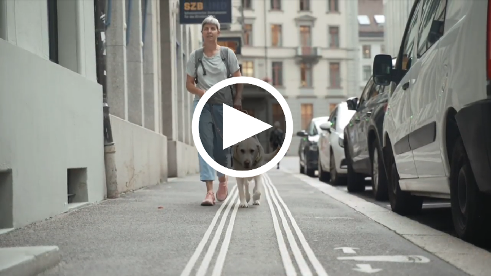
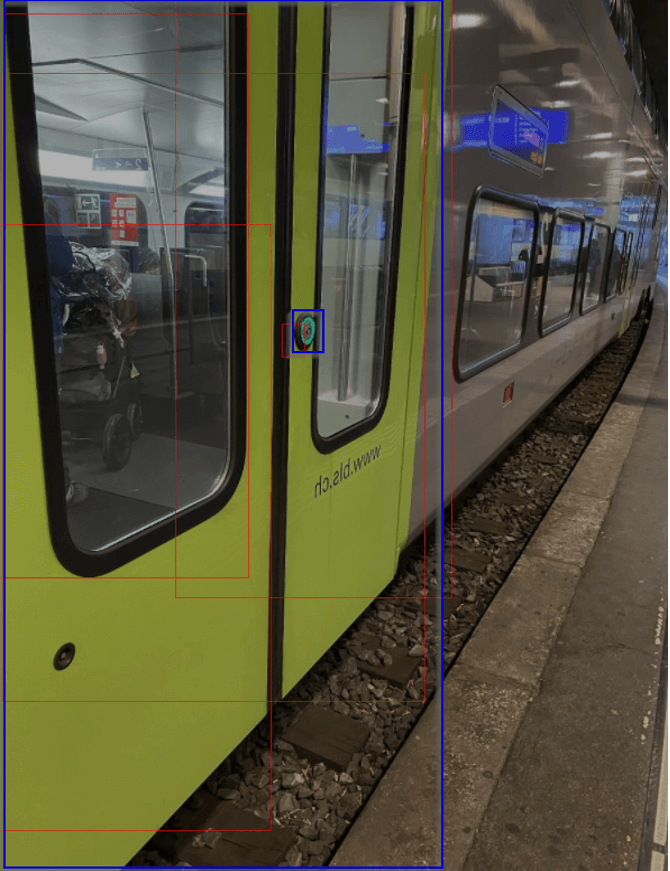

{% comment %} For date comparisons, see https://stackoverflow.com/a/23025858/3311770 {% endcomment %}
{% capture nowunix %}{{ 'now' | date: '%s' | plus: 0 }}{% endcapture %}

<section class="challenge-container">
  <h1>CFF Challenge: «A-Eye» for the visually impaired: 
  train door button detector
  </h1>

  <a target="_blank" href="https://drive.google.com/file/d/1QKTNbuuT1GO1wFG8yDpUntKhq6ZmlsiU/view?usp=sharing"></a>

  <h2>About us</h2>
  <p>
  The <a href="https://www.sbb.ch/en/home.html">Swiss Federal Railways (SBB CFF FFS)</a> is the national railway company of Switzerland. CFF moves people, goods and manages large amounts of infrastructure – be it with focus on railroads or real estate.
  </p>
  <p>
    CFF has a long history of excellence when it comes to intensity of use, safety and reliability and quality of service for all our passengers and clients. These are aspects we would like to keep on a high level of satisfaction and where we strive for continuous improvement. 
  </p>
  <h2>
    Our client base includes everyone: focus on the visually impaired
  </h2>
  <p>
    This continuous improvement shall be of use to all our customers. During this challenge, we would like to focus on a specific subgroup of our customers, the blind and visually impaired. This is not something new, but an endeavor we have started quite some time ago. 
  </p>
  <h2>
    Our endeavor so far: the award-winning app «SBB Inclusive»
  </h2>
  <p>
    With our app <a href="https://news.sbb.ch/fr/article/98842/inclusive-cff-remporte-le-prix-de-la-canne-blanche">SBB Inclusive</a> we have just recently been awarded the «Canne Blanche 2020», a prize which is awarded to projects, which try to make the environment more accessible to the blind and visually impaired. 
    SBB Inclusive makes it possible for people with visual impairment and blindness to provide access to mobility in a simple way. 
  </p>
  <p>
    The app tells you on which platform your train departs and where you arrive, so journeys become more plannable. Furthermore, and once you have boarded the train, SBB Inclusive tells you in which coach and class you are and informs you about upcoming stops. Also, functions like enlarged text or dark mode have been built in to make it easier to access information for people with visual impairments. 
  </p>
  <p>
    We are happy, glad and a bit proud to have come so far, but we are not quite there yet. Since we strive for continuous improvement, we would like to further improve SBB Inclusive. And this is where our challenge comes in.
  </p>

  <h2>
    The challenge: Building in a train door button detector
  </h2>

  <p>
    There are a lot of functionalities we could not integrate so far. As mentioned, as a blind person, today you’ll be guided to the right track at the right time. But still you have no tools to find the door. This leads to inconveniences for our visually impaired customers.
  </p>
  <p>
    Imagine: They sometimes have to scan the train with their hands to find the door buttons, and we all know that – despite our efforts – trains are not always squeaky clean on the outside. If we can guide the blind to the door buttons, we make their public transport experience much better and safer, which is what we would like to do. 
  </p>
  <p>
    In the video, we showed you a solution by NaviLens as an analogy. They work with tags, a QR-code like idea. Using their smartphone, visually impaired customers can scan said tags and are then informed where the objects are.
  </p>
  <p style="color:red;">
    Reminder: This is not how we want to do it, we are NOT going to use tags. In our solution, the train door button detector should find the buttons, and not tags or QR codes. 
  </p>

  

  <br>
  <h2>CFF challenge and available data: Choose «the model» or «the implementation»</h2>
  <p>
    For the concrete challenge, we’d like to offer you two different options: 
  </p>
  <h3>1)	Challenge the model</h3>
  <p>
    We have already started training an object detection model, which can help us solve the question at hand. Therefore, the first option for you is to have a look at our model and challenge it and make it better. This mean, you are developing a model using machine learning.
  </p> 
  <p>
    Following the <a href="https://objectstorage.uk-london-1.oraclecloud.com/p/1J1D0PyVRQwnW11s7g3uIF8oAKOsXf6uCE4T2esnayy0ZhBWsFOcVcmbq9F8783E/n/orasealps/b/LauzHack2020/o/dataset.tgz">link</a>, you will find a data set with approx. 5'000 images on which the objects are marked (size: approx. 15 GB). This data set is available as an S3 Bucket or directly on the Oracle Cloud. We also have 100 <a href="https://objectstorage.eu-zurich-1.oraclecloud.com/n/zrb4szr3ko7k/b/bucket-20201127-1713Test_Images/o/images_to_test_with.zip">test images ready for you</a> to test your model. These are not marked and are not part of the large data set.
    <br>
    Oracle team prepared 6 <a href="https://docs.cloud.oracle.com/en-us/iaas/data-science/using/data-science.htm">OCI Data science</a> environments which gives access to Python ML stack through a Jupyter Lab IDE and GPU support.
    Let us know on SBB Discord channel if your team is interested in this machine learning challenge or directly contact Boubacar from the LauzHack committee and we’ll give you access to one of these environments.
  </p>
  <p>
    Illustration: Example of an image with marked objects 

  </p>
  
    <ul class="indented">
      <li>Türe = door</li> 
      <li>Türtaster = door button</li> 
      <li>Offene Türe = open door</li> 
      <li>Türgriff = door handle</li> 
    </ul>
  <h3>
    2) Finding the door and the door button / the implementation
  </h3>
  <p>
    For the second option you can also focus on the user experience, by creating a navigation pattern for the blind using technologies such as voiceover or haptic feedback. 
  </p>
  <p>
  If you don't want to develop the model yourself, <a href="https://drive.google.com/file/d/1czB79SC_DWtIlWK-fG_5c1ya6xuFB7Wz/view?usp=sharing">you can use one of our models</a>. We offer you Core ML (iOS 11) or TensorFlow (Android). These models come from <a href="https://www.customvision.ai/">https://www.customvision.ai/</a> by Microsoft and are not specifically adapted. 
  </p>
  <h2>Submission of the results of the challenges</h2>
  <h4>Challenge 1</h4>
  <p>
    On Sunday at 10 am CET you will receive about 200 test files. These files shall then be
    checked with your model and the objects (door, door handle, door button, door open)
    detected.
  </p>
  <p>
    As a result, we need a text file with the same name as the image (<a href="https://drive.google.com/file/d/1IuKz2C2h8gzP3cahajQGVeAQ6UPVjbAq/view?usp=sharing">example file</a>) with the following information for each image:
  </p>
  <ul class="indented">
    <li>&ltclass_name&gt</li>
    <li>&ltconfidence&gt</li>
    <li>&ltleft&gt</li>
    <li>&lttop&gt</li>
    <li>&ltright&gt</li>
    <li>&ltbottom&gt</li>
    <li>As well as a visualization of the image with all bounding boxes which have a confidence >= 40%.</li>
  </ul>
  <h4>Example</h4>
  
  <div style="height:20em; display:inline-block" >
    
    
    <p><span style="color:blue">Blue</span>: ground truth // <span style="color:red">Red</span>: bounding box from the model<p>
  </div>
  <p>
    We then check how well your bounding boxes match our (manually drawn) ground truth.
  </p>
  <p>
    Please include a <b>pitch video</b> and link to <b>source code</b> (e.g github repository) in your project submission. You can specify the location of the test files and visualization images in a Readme file at the root of your repository.
    Additionally we would appreciate the <b>model</b> and a <b>documentation</b> of how to call the model.
  </p>
  <h4>Challenge 2</h4>
  <p>Besides the <b>pitch video</b> and the <b>source code</b> there are no additional elements.</p>
  <h2>
    Contacts and questions: Discord, Q&A sessions and HR topics
  </h2>
  <p>
    In case of any questions, please do not hesitate to contact us on Discord. 
    We’ll get back to you as soon as possible.
  </p> 
  <p>
    During the hack, CFF specialists Sergei Chevtsov (for the model) and Nicolas Brunner (for the implementation) will be glad to answer your questions. 
    They will both be present during the Q&A sessions on Friday evening from 8-9 pm and Saturday morning from 10.30-11.30 am. 
  </p>
  <p>
    In case you are interested in learning more about SBB CFF FFS as an employer, check out our HR website. Should you have further specific HR related questions, send an e-mail to <a href="mailto:ramon.goeldi@sbb.ch">ramon.goeldi@sbb.ch</a> and we’ll get back to you.
  </p>
</section>
